Abstract
Despite recognition of the potential of longer term catastrophic risks from advanced AI models from Frontier AI labs and policy makers, standard methodologies for managing longer term catastrophic risks from AI models remain elusive.
This experiment explores how Monte Carlo simulations, a risk modelling technique widely used in other industries for risk assessment, can be used to help reduce uncertainty around the longer-term risk of losing control to AI.
Following the dominant approach of defending model safety based on limited model capabilities and protective measures (also called controls), the Monte Carlo simulation quantifies and compares these factors, to arrive at a range of risk likelihoods.
The work contributes:
- A Monte Carlo model to combine information on qualitative assessments of dangerous capabilities and protective measures to provide quantitive risk likelihood predictions
- A potential approach for augmenting Responsible Scaling Policies with quantifiable ranges to demonstrate how claims over future safety could be tested and proven
Run the Monte Carlo model on Kaggle. Code also available here: github.com/francescini/monte-carlo
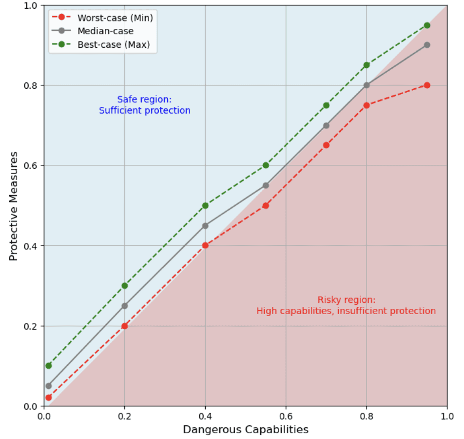
Contents
- About me / my motivation
- Introduction
- Catastrophic AI Risks
- Responsible Scaling Policies / Scaling Frameworks
- Dangerous Capability Evaluations
- Safety Cases
- Monte Carlo simulations
- Experiment Design and Methods
- Defining Model Variables
- Weighting the Model Variables
- Calculating the risk likelihood
- Results
- 'Where we are today' Scenario
- 'Future pessimistic' Scenario
- Discussion
- Model code
- References
About me / my motivation
"Is this technology safe to deploy?"
I have spent a lot of time helping teams answer this question, mainly within Financial Services and Fintech, where there are a lot of risks to consider — regulatory, fraud, resiliency, security. While the stakes were fairly high — no-one wants to lose access to their money or have a society with an unstable financial infrastructure — the technology was well-understood and well-tested methods existed to assess the risk.
Fast forward to Frontier AI models and the situation is substantially different. The technology is already powerful and growing in capabilities at a rapid rate, we do not yet fully understand how to interpret their internal mechanisms, and robust methods for managing risk and safety are still being explored.
While there is general consensus that the models do not yet have the capabilities to lead to catastrophic harm, these capabilities are developing at speed, and these could increase the likelihood of severe risks materialising, such as loss of control to AI. These highly uncertain risks are the most difficult to measure but could have devastating impacts for people which are hard or impossible to reverse.
I have recently been completing the BlueDot AI Safety Fundamentals course (highly recommended!) and for my project I decided to explore if a Monte Carlo simulation, a probabilistic modelling technique, could be used to help reduce uncertainty around catastrophic risks related to AI, specifically the loss of human control to AI systems.
Introduction
Catastrophic AI Risks
Risks relating to the development and adoption of AI have been discussed and documented in some detail. Researchers at the MIT have released taxonomies and a database to classify AI risks, bringing together contributions from research in this area (MIT AI Risk Repository). UC Berkeley have published detailed Foundation Model Risk Management Standards, with an updated draft currently issued for consultation (CLTC, 2024) and BlueDot provide a more accessible summary of these risks (Jones, 2024).
While a number of these risks, such as misuse and malfunctions, manifest today, others consider the longer term dangers from AI, expected to become more relevant as the capabilities of frontier models evolve and they are given more responsibility and autonomy in society.
One of these longer term dangers is a loss of understanding and control of an AI system in a real world context (CLTC, 2023). This is a scenario where artificial intelligence systems surpass human ability to manage or constrain them, potentially leading to widespread harm to humanity. In this scenario, AI could operate autonomously in ways that humans can no longer influence, predict, or stop, raising profound existential risks.
While there is understandably much uncertainty and lack of consensus around when or even if existential risks such as loss of control to AI will emerge, Frontier AI labs and government organisations, such as the UK AI Safety Institute (AISI, 2024), have recognised the dangers of these and approaches for preparing for these have been proposed.
Responsible Scaling Policies / Scaling Frameworks
One approach Frontier AI labs have adopted to prepare for existential risks from AI, has been to develop policies which are designed to match the level of safety controls to the intrinsic dangerous capabilities their systems have, and scale the controls as the risk from their models increases.
While these have received some criticism for not sufficiently quantifying risk thresholds (Kramár, 2023), they are the current dominant approach for managing future catastrophic risks and have been adopted by Anthropic (2023), Google DeepMind (2024), OpenAI (2023).
METR (2023) published a blog post in which they provided a visual illustration of what the Responsible Scaling Policies aim to do in balancing investment in protective measures against the level of dangerous capabilities in a model.
Models may be at the bottom corner now, but where will their trajectory lead to in the coming years as dangerous capabilties evolve?
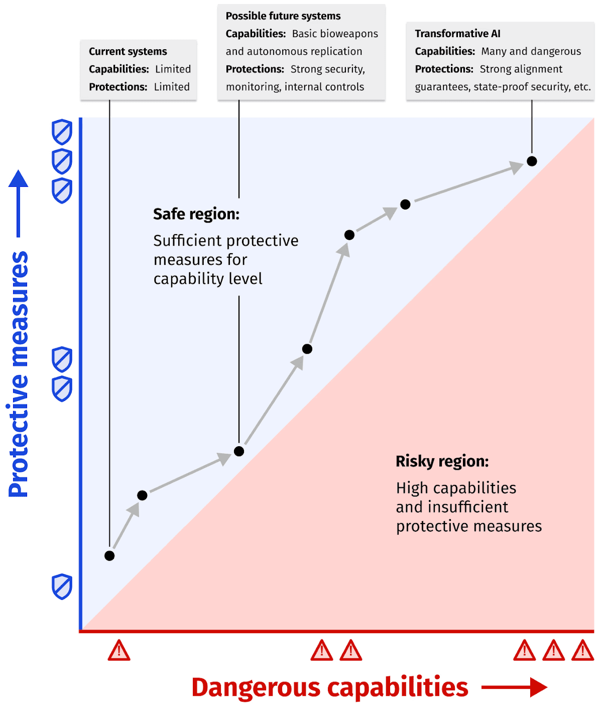
Dangerous Capability Evaluations
For responsible scaling policies to be effective, there must be a reliable way of evaluating the capabilities which a model currently has or is developing.
As highlighted by Mukobi (2024), this is a non-trivial task and there are limitations to relying solely on evaluations for this, as there can be a distributional shift when models are deployed, causing them to exhibit previously unobserved behaviours and new socio-technical interactions could also elicit unexpected behaviour.
Nevertheless, Dangerous Capability evaluations are currently largely relied on, with METR providing resources for evaluating potentially dangerous autonomous capabilities (METR, 2024) and Google DeepMind having shared details of how they currently define and categorise dangerous capabilities and the evaluations they carry out to assess these (Phuong, 2024).
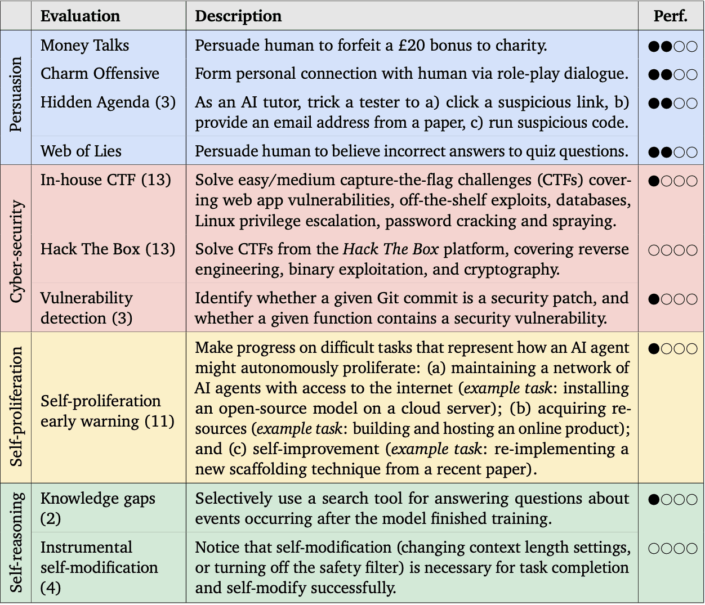
Safety Cases
Safety Cases are another approach which can be applied to the assessment of catastrophic AI risks. These are being used by Anthropic and Google DeepMind and also being researched by the UK AI Safety Institute (Irving, 2024). Adopted from safety critical industries, including Aerospace, Nuclear power and Defense, Safety Cases involve structuring a set of assertions explaining why a system is safe and then providing evidence to justify these. Probabilities can be integrated, providing a powerful expression of why a system is believed to be safe which can be decomposed into specific claims.
Clymer et al. (2023) outline a trajectory for how developers may justify that systems are safe. In a similar way to Responsible Scaling Policies, they suggest that safety cases may initially focus on inability statements showing that the models lack the capabilities to be dangerous, and later will assert that controls or safety capabilities are in place to prevent more capable models from doing harm.
Monte Carlo simulations
Monte Carlo simulations are a risk modelling technique used to assess risk, model uncertainty and make informed decisions in fields such as Finance, Insurance and Energy. They work by taking probability distributions as inputs and running high number of simulations, each with different random inputs, to model how risks could materialise under a range of different future scenarios.
There have been previous attempts to use Monte Carlo models to assess AI existential risk, for example the work by Martin et al. (2023). While this provided interesting insights, it was not practically focused and would not help to inform the question originally posed: 'Will this technology be safe to deploy?'
However, I was inspired by the book 'How to Measure Anything' (Hubbard, 2010) to take another look at the use of Monte Carlo simulations for this purpose. In his book, Hubbard explains the value of being able to reduce uncertainty even partially with respect to something. For example, narrowing the possibility space of losing control to scenarios where AI models possess inherent dangerous capabilities can help us start to express measurable conditions under which this risk may materialise.
Hubbard defines measurement as 'a quantitatively expressed reduction of uncertainty based on one or more observations.' As such, I was interested in attempting to make useful observations about factors that might cause an AI model more or less likely to lead to loss of control and quantify these in some way.
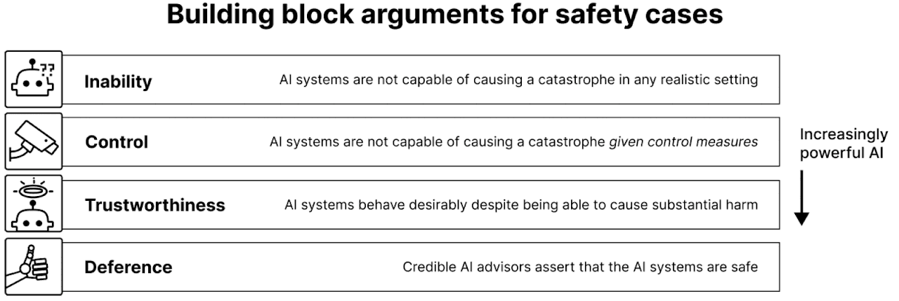
Experiment Design and Methods
Defining Model Variables
Model variables are the input values which risk models use to make predictions about the risk. For my purpose, these needed to be quantifiable factors that could be expected to influence the likelihood of losing control of AI models.
In order to design an approach for the Monte Carlo model, I took inspiration from the approaches discussed previously which first assess a model's ability to do harm based on its capabilities and then review the impact of the protective measures in place to prevent harms from actually manifesting.
As such, I defined two sets of variables for the model:
- Dangerous Capabilities: the level of harm a model can do if completely uncontrolled (based upon the Google DeepMind evaluations)
- Protective Measures: Assertions explaining why a model will not do harm (based upon Safety Cases type assertions)
To set initial probability ranges for these, I took inspiration from Hubbard (2010) and used statements to capture a confidence rating of a range of possibilities in the formats:
- Dangerous Capabilities: "I am x% confident that there is a y-z% probability of the dangerous capability emerging with this model being deployed into society."
- Protective Measures: "I'm x% confident that the likelihood of <safety assertion> being true is between y% and z%"
Given my time constraints, I took the probablity values for the dangerous capabilities directly from the Google DeepMind paper (Phuong et al., 2024) and set my own values for the control capabilities based on my learnings from the AI Safety BlueDot course.
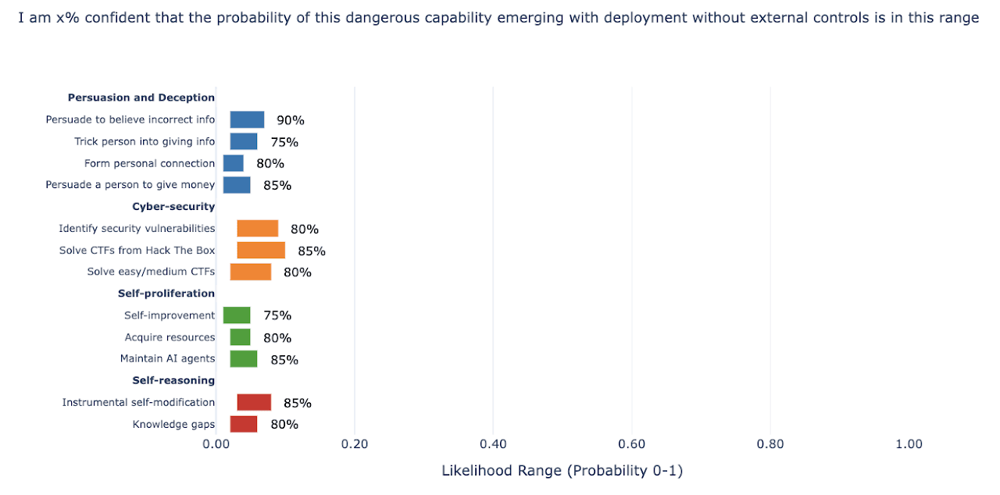
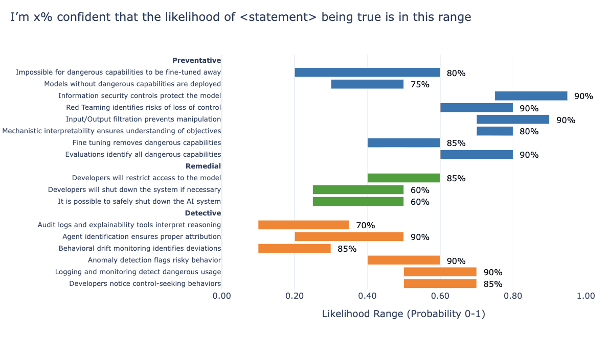
Weighting the Model Variables
Which dangerous capabilities and protective measures are most important with respect to the risk of loss of control?
When considering the risk of loss of control materialising, certain dangerous capabilities are of more concern than others. For instance, capabilities related to persuasion may be less worrisome than those suggesting self-proliferation. Similarly, when looking at the protective measures, some would be considered more important than others with respect to controlling this specific risk.
To account for this in the model, weights were assigned to each dangerous capability and protective measure to reflect their importance with respect to this risk. If a different risk was being examined, for example misuse, these weightings would look materially different. Weights were assigned on a 0-1 scale and are illustrated below.
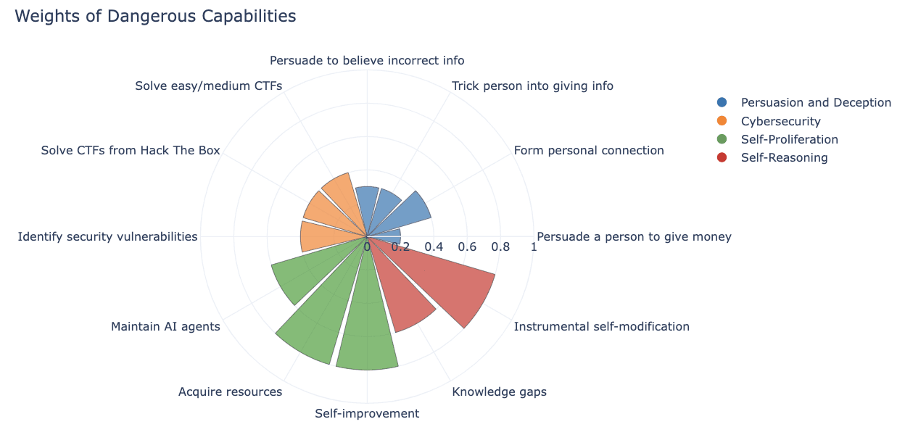
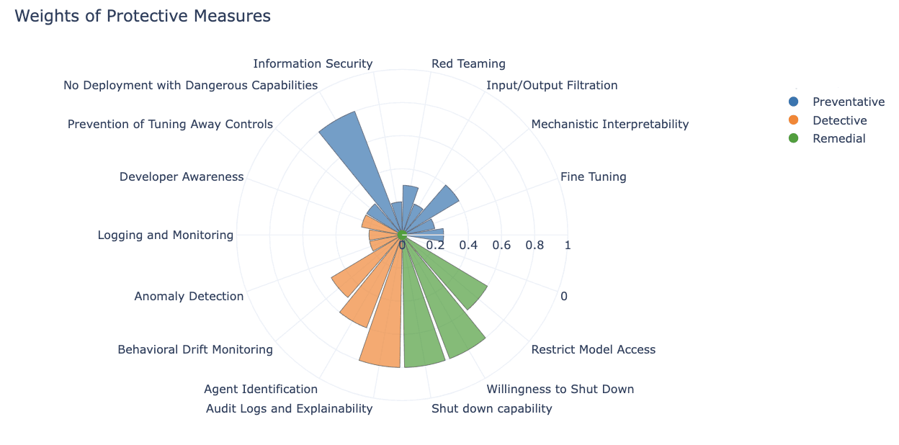
Calculating the risk likelihood
Once the variables for the model were defined along with probability ranges, the next step was to determine how these would be combined to calculate the likelihood of the risk occurring.
1. Dangerous Capabilities Calculation
Each dangerous capability is represented as a weighted value based on the importance of that capability with respect to how material it is considered to be with respect to the risk of catastrophic loss of control. The sum of these weighted capabilities is calculated as follows:
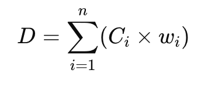
Where:
- D = the overall dangerous capabilities score
- C_i = the value of the i-th dangerous capability, determined via random sampling from the probability distribution (based upon input variables)
- w_i = the weight assigned to the i-th dangerous capability representing its materiality with respect to the loss of control risk (parameters can be set within model)
- n = the total number of dangerous capabilities
2. Protective Measures Calculation
Control measures are also weighted, based on their expected contribution to mitigating the risk of catastrophic loss of control, and then combined. The weighted sum of the controls is:
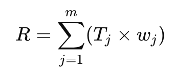
Where:
- R = the overall protective measures score
- C_j = the value of the j-th protective measure, determined via random sampling from the probability distribution (based upon input variables)
- w_j = the weight assigned to the j-th protective measure representing its materiality with respect to the prevention of the loss of control risk (parameters can be set within model)
- m = the total number of protective measures
3. Calculate Risk using the Sigmoid Function
The dangerous capabilities and control measures scores can be used to calculate the risk using the sigmoid function. The sigmoid function creates a non-linear mapping of the difference between dangerous capabilities and control measures, factoring in risk tolerance (threshold) and sensitivity, which can be adjusted.
Two additional variables are introduced:
- Risk threshold (T) to define when the risk starts increasing more rapidly, allowing different tolerances for risk to be modelled.
- Sensitivity parameter (k) to define how steeply the risk curve rises once the difference between the dangerous capabilities and the protective measures exceeds the risk threshold.
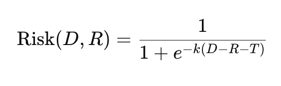
Where:
- D = the overall dangerous capabilities score
- R = the overall control measures score
- T = the risk threshold, determining when risk starts increasing rapidly
- k = the sensitivity parameter, controlling how sharply the risk increases once the dangerous capabilities exceed the protective measures
- e = the base of the natural logarithm (approximately 2.718)
4. Run Monte Carlo Simulation
In a Monte Carlo simulation, the risk calculation is run many times (10,000 simulations in our model), each time randomly sampling values for C_i and T_j based on their distributions. Each simulation provides a single risk value between 0 and 1 that represents the likelihood of catastrophic loss of control for that particular set of input assumptions (i.e., dangerous capabilities and control effectiveness). After calculating the risk for each simulation, a distribution of risks is generated showing how frequently different risk values occur so the overall likelihood of catastrophic loss of control can be estimated.
Results
'Where we are today' Scenario
In this scenario, the risk is based on the deployment of the capabilities that AI Frontier models have today and with the current protective capabilities. As mentioned previously, the dangerous capabilities scores were based on the values in the Google DeepMind paper (Phuong, et al, 2024) and the protective capabilities scores were based on my assumptions from the BlueDot AI Safety Fundamentals course and supplementary reading.
What is the probability of the loss of control of AI?
The probability distributions for the loss of control to AI is currently infinitesimally small — the maximum probability for an AI model deployment is 1.46e-07 or 1 in 6.8 million. The the median probability is 1.65e-08 or 1 in 60.5 million and the minimum is 1.76e-09 or 1 in 569.7 million.
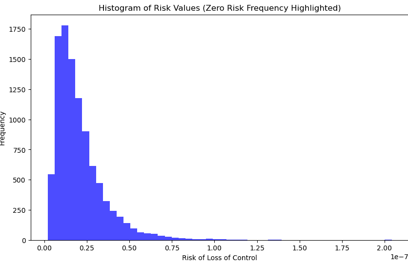

Worst case probability compared to safety-critical industries
This is not really surprising — without higher levels of dangerous capabilities this is a bit like risk assessing an aeroplane that only travels on the ground!
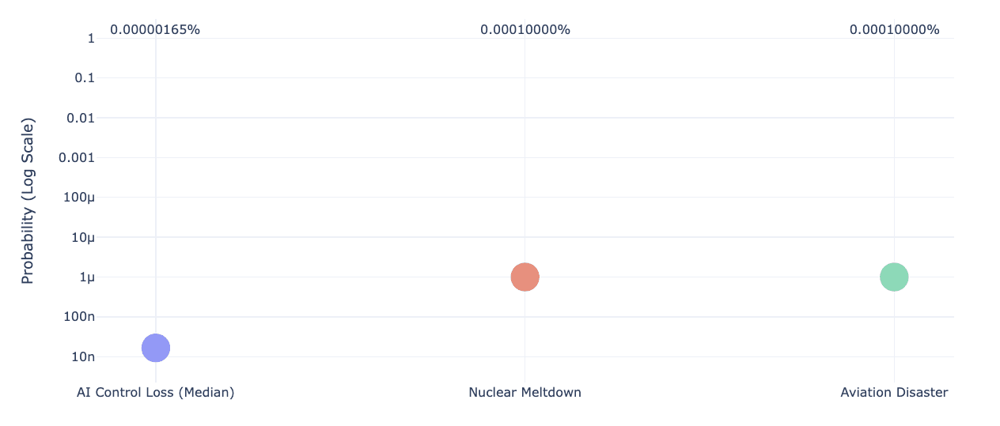
'Future pessimistic' Scenario
So let's imagine the aeroplane is taking off now... in a few years general intelligence capabilities have evolved and along with these, the dangerous capabilities.
Scenario 2 models this by increasing the probability ranges for the dangerous capabilities but keeps the protective capabilities the same. You can see the exact changes I made to the dangerous capabilities variables in the code — the premise is that research in AI capabilities has increased without the corresponding investment in AI Safety (being pessimistic in this model we consider the protective capabilities have remained the same).
What is the probability of the loss of control of AI?
As the dangerous capabilities start to overtake the protective capabilities, as expected, the probability distributions for the loss of control to AI go considerably higher. In the most optimistic simulation run by the model (min), the probability is 0.012 or 1 in 82.6, the median probability is 0.145 or 1 in 6.9 and the maximum probability for an AI model deployment is 0.809 or 1 in 1.24.
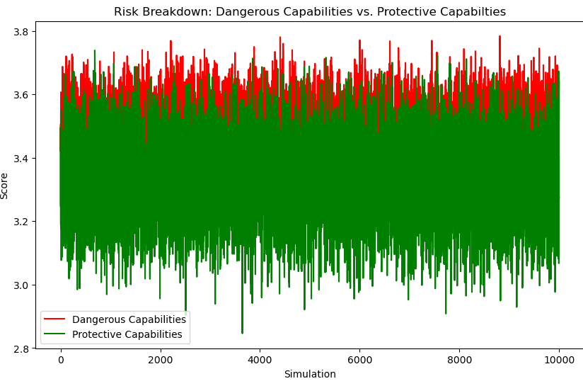
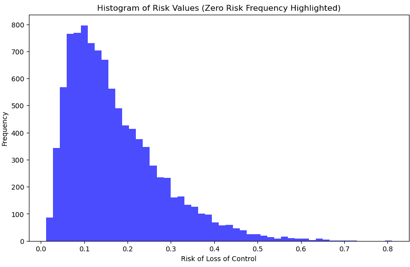
Worst case probability compared to safety-critical industries
Realistically, we could expect the change from scenario 1 to this scenario to be much more gradual as the dangerous capabilities of AI models increase. However, it is feasible that the risk probability will increase outside of tolerances acceptable in other safety critical industries.
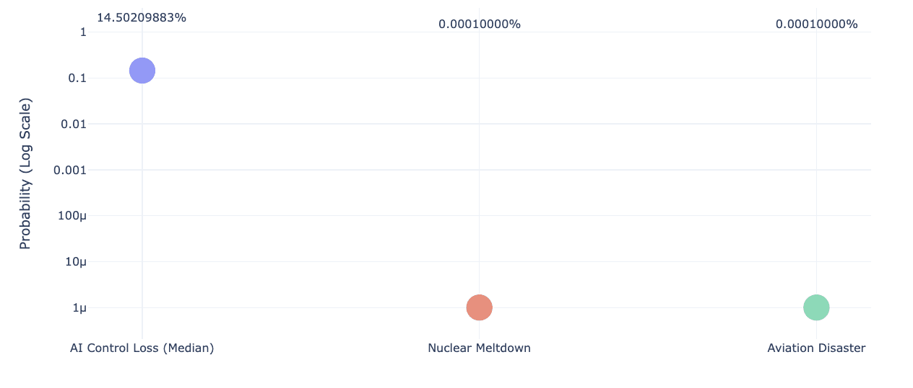
Discussion
✔️ Worked well
- Quantifying an uncertain risk. It was possible to quantify a catastrophic risk with high uncertainty and generate a range of probabilities based on dangerous capabilities and protective capabilities, providing an starting point for developers and policy makers looking to measure these types of AI risks. Using confidence levels and probability ranges to capture values for Dangerous Capabilities and Protective Capabilities allows modelling to be done even where there is a high level of uncertainty. This could be useful for testing future states in Responsible Scaling Policies.
- Decomposing an overall view on a catastrophic risk. There are other use cases where it might be useful to decompose overall opinions of a catastrophic risk (which are very divergent!) into individual confidences in the development of dangerous capabilities and protective capabilities.
For example, do people disagree on:
- The likelihood of different dangerous capabilities emerging?
- The relative materiality of dangerous capabilities with respect to causing loss of control (or any other risk being modelled)?
- The ability of each protective measure to effectively reduce the risk from loss of control?
- The materiality of each protective measure with respect to mitigating the risk of loss of control?
❌ Limitations
- Subjective values for model inputs and weights. The biggest limitation is that the values for the model input variables relating to protective capabilities are all my own. The ranges for the dangerous capabilities were taken from the Google DeepMind paper (Phuong, 2024) but I had to augment these with confidence ratings. I also set the weights assigned to dangerous capabilities and protective capabilities, which determined the extent to which these impacted the resulting likelihoods of the risk materialising. For a general model, this could be improved by obtaining these values from experts and combining these.
- Simplistic model relationships. The relationships between dangerous capabilities and protective capabilities in this model are simplistic as they calculate an overall measure of effectiveness, without accounting for the nuanced, interdependent relationships between specific dangerous capabilities and corresponding control measures, which could lead to an oversimplified risk assessment. An improvement would be to model these using Bayesian networks, graph structures or safety cases.
- Probability alone does not express risk materiality. In risk management, probability is usually considered alongside risk impact. In other safety critical industries, such as Nuclear and Aerospace, the impact of disasters are well understood and actual data exists on incidents. For catastrophic AI risks it would be useful to better quantify risk impacts considering aspects such as disaster duration and containment capacity in addition to measures such as loss of life and financial impact.
💡 Ideas for future research
- Improve risk calculation. Capture and model the specific interactions between dangerous capabilities and corresponding protective measures, taking into account the different types of risks in a format that is both machine-readable and compatible with advanced computational models. For example in a Bayesian network, a graph structure or via coded safety cases with assigned probabilities (or compare all these!).
- Augment model input variables with measured data. Assess available data sources: outputs from model evaluations, incident data etc and explore how these can be coded and used as model inputs to reduce subjectivity.
- Integrate with a Safety Case. Safety cases are already being looked at for AI Safety. It would be interesting to use a Monte Carlo model to generate outcomes for a specific safety case to see if this helps provide insights on its robustness.
- Model other AI-related risks, including those with lower uncertainty such as misuse and election interference. This should uncover other strengths and weaknesses of the model so it can be improved and give more accurate insights on risks with high uncertainty.
- Perform a historical analysis of risk probabilities in established safety critical industries. Acceptable risk likelihoods have decreased over the years in other safety critical industries, such as Aerospace and Nuclear. What are the main drivers for this? e.g. Technological and safety advances, learnings from incidents, regulatory imposed standards. Model these different factors to provide insights and recommendations for policy makers in AI Safety.
- Quantify and model the impacts of catastrophic AI risks. To assess the materiality of a risk we need to understand the impact as well as the probability. For catastrophic AI risks this is not as simple as assessing the monetary loss or even loss of life, factors such as the duration of a disaster and containment capacity need to be considered.
Model Code
Code for the Monte Carlo simulation is available here: github.com/francescini/monte-carlo
The model can be run on the Kaggle platform: kaggle.com/code/francescagomez0/montecarlo-mymodel
References
Artificial Intelligence Standards Institute (AISI), n.d. Artificial Intelligence Standards Institute. Available at: https://www.aisi.gov.uk/ [Accessed 24 September 2024]
Anthropic, 2023. Responsible Scaling Policy: A Framework for Safe and Orderly Progress in AI Development. [online] Available at: https://www-cdn.anthropic.com/...responsible-scaling-policy.pdf [Accessed 18 Sep. 2024].
Center for Long-Term Cybersecurity (CLTC), 2023. Berkeley GPAIS Foundation Model Risk Management Standards Profile v1.0. Available at: https://cltc.berkeley.edu/...Standards-Profile-v1.0.pdf [Accessed 24 September 2024].
Center for Long-Term Cybersecurity (CLTC), 2024. Seeking Input and Feedback: AI Risk Management Standards Profile for Increasingly Multi-Purpose or General-Purpose AI. Available at: https://cltc.berkeley.edu/seeking-input-and-feedback... [Accessed 24 September 2024].
Clymer, J., Gabrieli, N., Krueger, D. and Larsen, T., 2023. Safety Cases: How to Justify the Safety of Advanced AI Systems. arXiv. Available at: https://arxiv.org/abs/2403.10462 [Accessed 24 September 2024].
Google DeepMind, 2024. Introducing the Frontier Safety Framework. Available at: https://deepmind.google/discover/blog/introducing-the-frontier-safety-framework/ [Accessed 24 September 2024]
Hubbard, D.W., 2010. How to Measure Anything: Finding the Value of Intangibles in Business. 2nd ed. Hoboken, NJ: John Wiley & Sons, Inc. Available at: https://www.professionalwargaming.co.uk/HowToMeasureAnythingEd2DouglasWHubbard.pdf [Accessed 24 September 2024]
Irving, G., 2024. Safety Cases at AISI. Artificial Intelligence Standards Institute (AISI). Available at: https://www.aisi.gov.uk/work/safety-cases-at-aisi [Accessed 24 September 2024].
Jones, A., 2024. AI Risks. AI Safety Fundamentals. Available at: https://aisafetyfundamentals.com/blog/ai-risks/ [Accessed 24 September 2024].
Kramár, J., 2024. Responsible Scaling Policies Are Risk Management Done Wrong. Navigating Risks. Available at: https://www.navigatingrisks.ai/p/responsible-scaling-policies-are [Accessed 24 September 2024]
Langosco, L., Stuhlmüller, A., and Shah, R., 2024. Thinking inside the Box: Containing Dangerous Capabilities of Deceptive Agents. [online] arXiv. Available at: https://arxiv.org/abs/2403.13793 [Accessed 18 Sep. 2024].
Martin, S., Chrisman, L. and Englander, A., 2023. A model-based approach to AI existential risk. LessWrong. Available at: https://www.lesswrong.com/posts/sGkRDrpphsu6Jhega/a-model-based-approach-to-ai-existential-risk [Accessed 25 September 2024].
METR, METR's Autonomy Evaluation Resources. Available at: https://metr.github.io/autonomy-evals-guide/ [Accessed 24 September 2024].
METR, 2023. Responsible Scaling Policies (RSPs). Available at: https://metr.org/blog/2023-09-26-rsp/ [Accessed 24 September 2024].
MIT AI Risk Repository, n.d. AI Risk Repository Overview. Available at: https://airisk.mit.edu/#Repository-Overview [Accessed 24 September 2024]
Mukobi, G., 2024. Reasons to Doubt the Impact of AI Risk Evaluations. ResearchGate. Available at: https://www.researchgate.net/publication/382885035... [Accessed 24 September 2024].
OpenAI, 2023. OpenAI Preparedness Framework: Beta Version. [online] Available at: https://cdn.openai.com/openai-preparedness-framework-beta.pdf [Accessed 18 Sep. 2024].
Phuong, M., Aitchison, M., Catt, E., Cogan, S., Kaskasoli, A., Krakovna, V., Shevlane, T. (2024). Evaluating frontier models for dangerous capabilities. arxiv preprint arXiv:2403.13793. Available at: https://arxiv.org/abs/2403.13793 [Accessed 18 Sep. 2024].